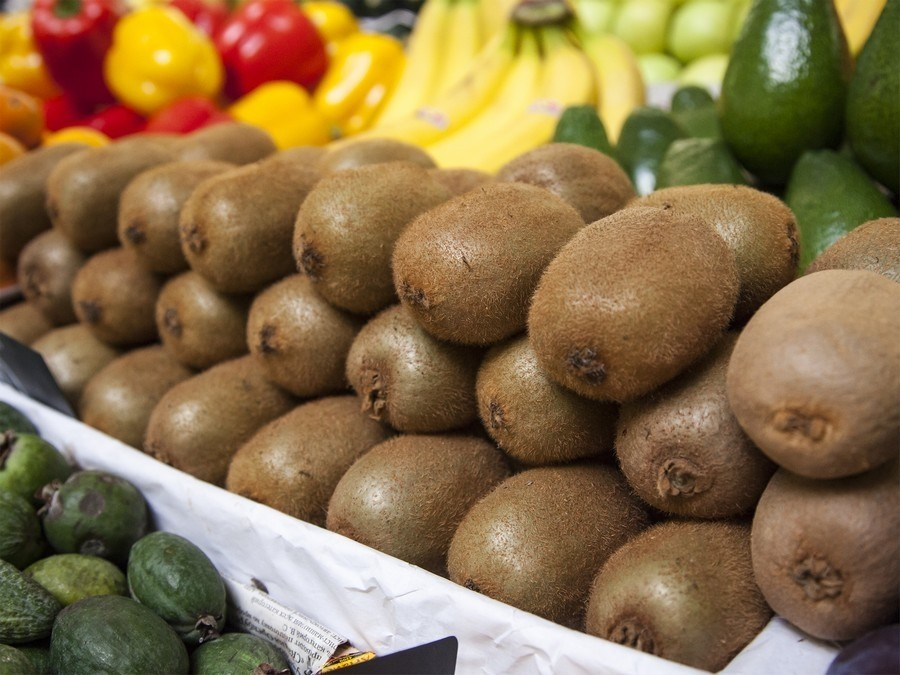

Riesiges Angebot – aber um welchen Preis?
Heuzutage ist das Angebot an Obst und Gemüse geradezu unüberschaubar. Im Supermarkt oder am Markt bekommt man zu jeder Zeit Obst und Gemüse auch außerhalb der Saison. Zum Vorteil einerseits, da es damit für Sie einfacher ist, auch im Winter Obst und Gemüse einzukaufen. Andererseits zum Nachteil, da vieles Obst und Gemüse tausende Kilometer Transportwege hinter sich hat und dadurch naturgemäß an Qualität einbüßt. Die Anbauarten (Einsatz von Chemie, usw.) aus fremden Ländern sind dabei noch nicht berücksichtigt. Heimische Sorten bevorzugen Generell sollte natürlich bevorzugt heimisches Obst und Gemüse auf den Teller kommen. Achten Sie deshalb beim Einkauf, woher die Ware stammt. Hat das Produkt derzeit Saison, dann sollten Sie auf jeden Fall zum Heimischen greifen. Denn dann werden lange Transportwege vermieden und meist ist auch das Produkt absolut frisch im Regal oder am Markt. Ein Vorteil an heimischer Ware ist natürlich nicht nur der ökologische (kurze Transportwege) Aspekt, sondern vor allem die Frische des Gemüses oder Obstes. Bevorzugt man saisonale Produkte aus der Region, ist dies auch deshalb schon garantiert, da diese aufgrund der kurzen Lagerung und des kurzen Transportes noch einen hohen Vitamingehalt haben. Sie können frisches Obst und Gemüse direkt bei uns bestellen, hinterlassen Sie einfach eine Anfrage!
Obst bestellen